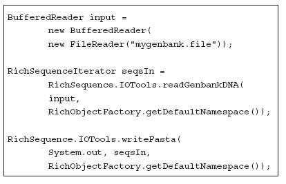
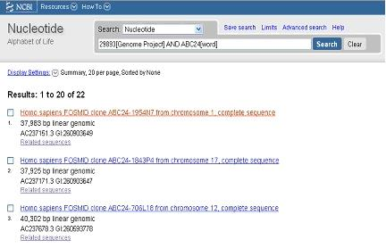
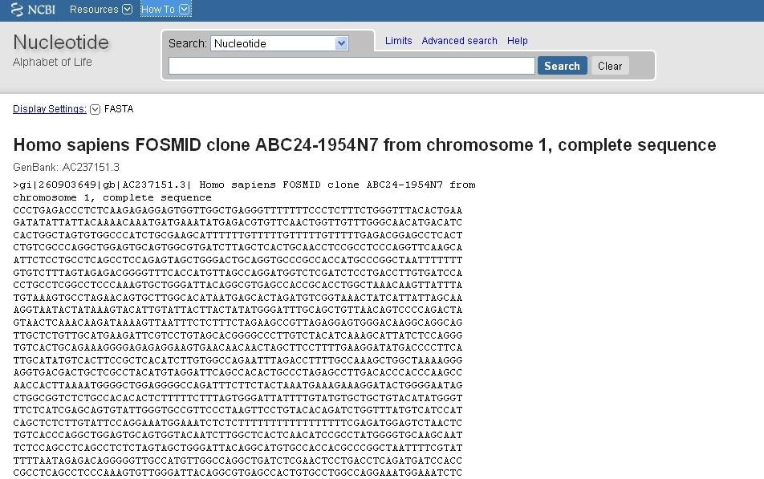
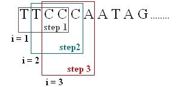

Data publicării: 19.01.2018
Autor articol: Mircea Vaida
Securitatea ADN – BioJava
Proiectul BioJava
Pornind de la tehnologiile alternative de securitate bazate pe ADN a caror viabilitate a fost aratata in precedentele rapoarte, s-a urmarit sa se integreze o noua tehnologie, BioJava, care ar putea fi extrem de folositoare in cazul utilizarii unor sisteme de calcul biologice care sunt o perspectiva a cercetarii stiintifice viitoare.
BioJava este un proiect “open-source” matur care oferă un framework de procesare a datelor biologice. BioJava conţine rutine puternice de analiză şi statistică, instrumente pentru parsarea tipurilor obişnuite de fişiere si pachete pentru manipularea secvenţelor şi structurilor 3D. Permite dezvoltarea rapidă a aplicaţiilor în bioinformatică folosind limbajul de programare Java. BioJava este un proiect open-source distribuit de Lesser GPL (LGPL) si poate fi găsit pe site-ul oficial BioJava (http://www.biojava.org). Pentru a instala Biojava este necesară minim versiunea Java 1.6. Actualmente este disponibila versiunea 4.0.0, disponibilă din Maven Central, versiunea 3+ fiind cea stabila si utilizata cu precadere.
Biojava a fost conceput în anul 1999 de către Thomas Down si Matthew Pocok ca un Aplication Programing Interface(API) pentru a simplifica dezvoltarea de aplicaţii de bioinformatică folosind platforma Java. De atunci a evolat într-un framework bine pus la punct cu module pentru rezolvarea mai multor sarcini din bioinformatică. BioJava are scopul de a facilita resurse de cod şi de a oferii implementări standard care sunt uşor de folosit în scripturi exterioare şi alte aplicaţii.
BioJava este un proiect open source care e dezvoltat de voluntari coordonaţi de către fundaţia Open Bioinformatics (OBF). Este unul dintre cele cateva proiecte Bio*. Tot codul este distribuit sub licenţa LGPL şi poate fi folosit de către oricine în orice formă.
BioJava este un proiect matur care a fost folosit deja în multe aplicaţii şi peste 50 de studii publicate. O listă a acestora se poat găsii pe site-ul BioJava. In conformitate cu informaţia aparută pe site-ul de urmărire a progresului realizat de BioJava http://www.ohloh.net/projects/ biojava codul insumat este estimat la un efort adunat de 297 de ani bazat pe modelul COCOMO.
Caracteristici
BioJava conţine mai multe API-uri. Cele mai folosite 10 API-uri sunt:
- Alfabete de nucleotide şi aminoacizi
- Parsare BLAST
- Secvenţe I/O
- Programare Dinamică
- Structuri I/O de manipulare
- Manipulare de secvenţe
- Algoritmi Genetici
- Distribuire Statistică
- Interfaţa Grafică pentru utilizator
- Serializarea Bazelor de date
La baza BioJava se află API-ul alfabet simbolic care reprezintă secvenţele ca o listă de referinţe către obiecte singulare simbolice derivate dintr-un alfabet. Listele de simboluri sunt stocate oricand este posibil intr-o formă comprimată de pană la patru simboluri pe bit de memorie. In plus faţă de simbolurile date de un alfabet (A, C, G, T in cazul codului AND) toate alfabetele folosite in BioJava conţin obiecte simbol extra reprezentând toate combinaţiile posibile de simboluri fundamentale.
Abordarea pe bază de simboluri permite constructirea unor alfabete şi simboluri de ordin superior care reprezintă multiplicarea unuia sau mai multor alfabete. Un exemplu este codonul “alphabet” care este produsul de ordinul trei al alfabetului ADN, fiecare codon simbol comprimand trei simbouri ADN. Un asemenea alfabet permite construirea de reprezentări a unei secvenţe fără a modifica secvenţa care stă la baza acesteia, metodă ce e folositoare pentru proceduri de translaţie. Alte alfabete complexe care pot fi formate includ alfabete condiţionale folosite pentru construcţia de distribuţii de probabilitate condiţionale si alfabete eterogene cum ar fi combinaţia dintre alfabetele codon si protein folosite pentru a creea o aliniere ADN-protein după model Markov (HMM). Alte aplicaţii interesante ale API-ului alfabet cuprind cromozomi pentru algoritmi genetici utilizand liste de simboluri intregi (integer) sau binare si reprezentarea Phread Quality Scores ca o multiplicare a alfabetului ADN şi integer.
Un utilizator obişnuit al BioJava ar incepe cel mai probabil cu API-ul de Input/Output şi cu obiectul de secvenţă. Acestea oferă posibilitatea de a parsa secvenţe din fişiere de diferite formate cum ar fi FASTA, GenBank si EMBL, manipulându-le în memorie, apoi salvandu-le sau convertindu-le in fişiere de alt format. Simpliatea acestui proces este demonstrata in exemplul urmator:

Exemplul demonstrează cat de uşor se poate încărca un fişier de tip GenBank şi scrie ca un fişier FASTA folosind o serie de metode comode care ascund cea mai mare parte a implementării. Dacă utilizatorul doreşte o parsare mai flexibilă a secvenţelor se poate folosii de interfeţele ascunse în spatele acestor metode predefinite pentru a crea parsări complet personalizate.
Un alt API folositor este modelul obiectului proprietate/adnotare (feature/annotation) care asociază secvenţe cu proprietăţi locale şi adnotaţii. Proprietăţile pot fi găsite prin cuvânt cheie sau prin definirea unei interogări de locaţie prin care toate proprietăţile suprapuse sau conţinute sunt returnate. Adnotaţiile pot fi returnate prin cuvant cheie. Modelul locaţiilor poate manipula locaţii circulare, izolate sau multi-secvenţă permiţând proprietăţilor să extindă seturi complexe de coordonate.
API-ul pentru structura proteică conţine utilitare pentru parsarea şi manipularea fişierelor PDB. Conţine de asemenea metode utilitare pentru a executa calcule de algebră liniară pe coordonate atomice şi poate calcula modele de aliniere 3D. O interfaţă simplă pentru vizualizare 3D este şi ea conţinută. Un add-on ne permite serializarea fişierelor PDB intr-o baza de date.
Alte API-uri sunt incluse pentru manipularea cromatogramelor, alinierea de secvenţe, proteomici şi ontologii. Sunt disponibile parsări pentru citirea rapoartelor BLAST, cromatogramelor ABI şi NCBI, definiţii taxonomice.
A fost adăugat modulul BioJavaX care prevede parsări mai detaliate ale fişierelor de format obişnuit şi stocare îmbunătăţită a secvenţelor în baze de date BioESL (http://www.biosql.org – http://github.com/biosql/biosql.github.io/). Acests lucru permite incorporarea aplicaţiilor bazate pe BioJava în pipe-uri de procesare a datelor care folosesc toolkit-uri alternative precum BioPerl.
Web site-ul BioJava prevede un manual detailat despre folosirea diferitelor componente, mai ales secţiunea CookBook conţine numeroase exemple de soluţionare a diferitelor probleme oferind cod sursă bine documentat.
Algoritmul Bio de criptare prin indexarea cromozomilor cu ADN
In cadrul colaborarii cu un alt colectiv de cercetare in domeniul biotehnologiilor, s-a dezvoltat si publicat in comun intr-un articol avand ca si prim autor pe Olga Tornea, un algoritm de criptare ADN bazat pe indexarea cromozomilor cu ADN. In articolul „ENCRYPTION SYSTEM WITH INDEXING DNA CHROMOSOMES CRYPTOGRAPHIC ALGORITHM” se propune o implementare a algoritmului folosind mediul de programare Matlab utilizand funcţii ale Bioinformatics Toolbox pentru manipularea datelor ADN, [25].
Un punct de plecare a fost experimentul lui Leonard Adleman, făcut in 1994. El a rezolvat problema găsirii unui drum hamiltonian intr-un graf utilizand şiruri de ADN şi o serie de proceduri din biologia moleculară. A definit procedurile care utilizează o cheie de sesiune, de unică folosinţă in formatul ADN.
Pornind de la aceste elemente s-a propus, implementat si testat algorimul de criptare/decriptare ADN folosind BioJava, numit Bio. S-au facut apoi comparatii cu algoritmii clasici, atat cantitativ cat si prin diagrame vizuale.
Algoritmul prezentat este un criptosistem simetric de tip OTP (One-Time-Pad). In acest algoritm fiecare cheie este folosită o singură dată de unde şi numele de One-Time-Pad. Criptarea OTP utilizează un număr mare de chei aleatoare folosite o singură dată. Transmiţătorul criptează mesajul şi il trimite distrugand cheia folosită. Pentru că este un criptosistem simetric la recepţie trebuie să fie cunoscută aceeaşi cheie fără de care nu se poate face decriptarea. Deoarece cheile sunt aleatoare şi sunt folosite o singură dată aceste criptosisteme sunt considerate perfect sigure.
Pentru implementarea şi exemplificarea algoritmului a fost descărcat un cromozom din NCBI GenBank, care este o banca publica open source. In acest algoritm cromozomii se folosesc ca şi cheie de sesiune. Ei sunt alcătuiţi din molecule lungi de ADN şi conţin sute de baze (A, T, C, G). Au dimensiune mică şi o capacitate mare de stocare. Există o mulţime de cromozomi din organisme diferite care pot servi la asamblarea aleatorie a setului de chei de sesiune unică. Secvenţierea genomului inseamnă cunoaşterea ordinii in care sunt aşezate bazele în şiruri de ADN. Banca de date folosită în acest algoritm de criptare este GenBank – o bancă genetică publică menţinută de către NCBI (National Center for Biotechnology Information).
Făcand o căutare in această bază de date a fost ales şi descărcat un cromozom pentru implementarea algoritmului de criptare prin indexare. Pentru exemplificarea acestui algoritm a fost ales cromozomul “Homo sapiens FOSMID clone ABC24-1954N7 from chromosome 1” fiind um cromozom de lungime destul de mare (37983 baze).

GenBank oferă posibilitatea descărcării secvenţelor cromozomiale in mai multe formate:
- GenBank,
- GenBank Full,
- FASTA,
- ASN.1.
A fost ales formatul FASTA datorită uşurinţei in folosire şi manipulare. Pentru manipularea secvenţei cromozomiale s-au folosit metode din API-ul BioJava care oferă un framework de procesare a secvenţelor ADN.

Criptarea
Algoritmul a fost implementat in mediul de programare Java folsind Eclipse IDE (Integrated Development Environment) si package-ul BioJava. S-a creat o clasă numită DNA_Cypher, in care s-au dezvoltat funcţiile necesare pentru criptarea şi decriptarea datelor.
Mesajul a fost criptat şi transformat in biţi şi din biţi in baze de ADN. Fiecare caracter este văzut ca şi codul lui ASCII şi transformat pe 8 biţi, ceea ce este echivalent cu 4 baze de ADN. Transformarea din reprezentarea binară, care are un alfabet de 2 caractere (0, 1) în alfabetul ADN compus din patru caractere (A,C,G,T) s-a efectuat folosind 2 biţi pentru reprezentarea unui caracter din alfabetul ADN astfel:
- A-00
- C-01
- G-10
- T-11
Utilizand această substituţie – un caracter din textul original va fi reprezentat pe 4 caractere in alfabetul ADN. Pentru efectuarea acestei operaţii s-au implementat 2 funcţii:
- String get_bytes ( ) – care returnează un şir de biţi rezultat din codul ASCII al fiercărui caracter reprezentat pe 8 biti
- void get_DNA_code ( ) – care efectueză transformarea şirului de biţi în alfabet ADN returnând un string ce conţine mesajul codat ADN.
Caracterele astfel codate se caută în cromozomul care reprezintă cheia de sesiune. In momentul in care secvenţa de 4 baze care reprezintă un caracter din textul iniţial se regăseşte în cromozom indexul de inceput al acestui loc se memorează într-un vector. Secvenţa cromozomială este parcursă de la primul caracter pană la 37983, dimensiunea cromozomului. La fiecare pas este comparat un segment de 4 caractere, iar la următorul pas se ia următorul segment de 4 caractere astfel incat primele 3 caractere să fie ultimele caractere de la pasul anterior. Deci fiecare caracter din mesaj va avea un vector de indecşi care reprezintă locaţiile din cromozom unde se regăseşte reprezentarea caracterului în cod ADN.

Funcţia get_indexes ( ) efectuează parsarea – compararea secvenţelor din cromozomul „Homo sapiens FOSMID clone ABC24-1954N7 from chromosome 1” şi crează pentru fiecare caracter un vector de indecşi. Pentru parsarea secvenţelor din fişierul format FASTA s-a apelat la metode din API-ul BioJava dezvoltate pentru parsarea secvenţelor ADN din fişiere format FASTA:
void get_indexes()
{
String a1,a2,a3,a4;
String fileName = “Homo sapiens FOSMID clone ABC24-1954N7 from chromosome 1.fasta”;
BufferedReader br;
Sequence seq = null;
br = new BufferedReader( new FileReader(fileName));
SequenceIterator stream = SeqIOTools.readFastaDNA(br);
seq = stream.nextSequence();
br.close();
int i=0;
StringBuffer aux = new StringBuffer(dna_code);
StringBuffer aux2 = new StringBuffer(“”);
StringBuffer aux3 =new StringBuffer(“”);
int ct=0;
int ct_line = 0;;
int ct_colom = 0;;
index_array = new int[dna_code.length()/4][500];
ct_index = new int[dna_code.length()/4];
while(i<=dna_code.length()-4)
{
aux2.append(dna_code.substring(i,i+4));
i = i+4;
for(int pos = 1 ; pos<=seq.length()-3;pos++)
{
a1 = seq.symbolAt(pos).getName();
a2 = seq.symbolAt(pos+1).getName();
a3 = seq.symbolAt(pos+2).getName();
a4 = seq.symbolAt(pos+3).getName();
aux3.append(a1.charAt(0));
aux3.append(a2.charAt(0));
aux3.append(a3.charAt(0));
aux3.append(a4.charAt(0));
if(aux2.toString().compareToIgnoreCase(aux3.toString())==0)
{
ct++;
index_array[ct_line][ct_colom] = pos;
ct_colom++;
}
aux3.delete(0,aux3.length());
}
aux2.delete(0,aux2.length());
ct_index[ct_line] = ct;
ct = 0;
ct_line++;
ct_colom = 0;
}
}//get_indexes
BioJava ne oferă posibiltatea citirii secvenţelor din fişierul FASTA folosind un flux Fasta obţinut cu ajutorul clasei SeqIOTools şi iterarea secvenţelor cu un obiect al clasei SequenceIterator, urmand ca acestea să fie incărcate intr-un obiect al clasei Sequence. Sequence este o listă de simboluri şi ne permite accesul la fiecare simbol al secvenţei cu ajutorul functiei SimbolAt() al clasei Sequence.
In ultimul pas al criptării pentru fiecare caracter s-a selectat – in mod aleator – un index din vectorul lui de indecşi şi s-a format mesajul criptat ca un şir de indecşi (cate un index pentru fiecare caracter al mesajului iniţial). In acest scop s-a implementat funcţia get_random( ) care foloseşte clasa Random oferită de mediul de programare Java punandu-ne la dizpoziţie un puternic generator de numere pseudoaleatoare. Astfel, chiar dacă se foloseşte aceeaşi cheie pentru criptarea aceluiaşi mesaj se va obţine alt rezultat deoarece de fiecare dată se vor lua alţi indecşi pentru fiecare caracter.
Exemplificarea etapelor de criptare:
Mesajul: „test”
Mesaj in cod ASCII: 116 101 115 116
Mesaj in cod ADN: „TCACGCCCTATCTCA”
Vectorul de indici pentru litera „t”:
13 205 248 291 635 859 1123 1297 1301 1339 1456 1474 1651 1689 1694 1737 1854 2153 2426 2529 2543 2773 3415 3440 3458 3560 3597 3623 3758 3801 3910 3928 4264 4311 4322 4336 4354 4466 4484 4791 5175 5192 5680 5867 5888 6147 6186 6215 6244 6273 6302 6331 6360 6389 6418 6447 6476 6505 6534 6563 6592 6621 6650 6679 6708 6737 6766 6795 6824 6853 6882 6911 6940 6969 6998 7027 7056 7085 7114 7143 7172 7201 7230 7259 7288 7317 7346 7375 7404 7433 7462 7491 7520 7549 7578 7607 7636 7665 7694 7723 7752 7781 7810 7839 7868 7897 7926 7955 7984 8013 8042 8071 8100 8129 8158 8187 8216 8245 8274 8303 8332 8361 8390 8419 8448 8477 8506 8535 8564 8593 8622 8651 8680 8709 8738 8767 8796 8825 8854 8883 8912 8941 8970 8999 9028 9057 9086 9115 9144 9173 9202 9231 9260 9289 9318 9347 9376 9405 9434 9463 9492 9521 9550 9579 9608 9637 9666 9695 9724 9753 9782 9811 9840 9869 9898 9927 9956 9985 10014 10043 10072 10101 10130 10159 10188 10217 10246 10275 10304 10333 10362 10391 10420 10449 10478 10507 10536 10565 10594 10623 10652 10681 10710 10739 10768 10797 10826 10855 10884 10913 10942 10971 11000 11029 11058 11087 11116 11145 11174 11203 11232 11261 11290 11319 11348 11377 11406 11435 11464 11493 11522 11551 11580 11609 11638 11667 11696 11725 11754 11783 11812 11841 11870 11899 11928 11957 11986 12015 12044 12073 12102 12131 12160 12189 12218 12247 12276 12305 12334 12363 12392 12421 12450 12479 12508 12537 12566 12595 12624 12653 12682 12711 12740 12768 12796 12825 12853 12882 12911 12940 12969 12998 13027 13198 13267 13373 13471 13694 14433 14442 14649 14910 14948 14953 14996 15004 15411 15701 15722 15994 16102 16211 16760 16802 18080 18115 18264 18510 18527 19073 19321 19915 20171 20375 20476 20948 21087 21449 21492 21535 21652 21817 22065 22316 22460 22758 22947 22982 23128 23223 23255 23509 23549 23815 24202 24342 24352 24357 24517 24594 24682 24838 25493 25497 25576 25610 25615 25707 25797 26099 26425 26464 26724 26773 26885 27213 27453 27510 27552 28002 28184 28843 29393 29663 30062 30096 30121 30196 30225 30607 30903 31129 31388 31589 32181 32297 32315 32595 32938 32969 33115 33130 33251 33387 33398 33977 33999 34507 34581 34618 34661 34693 34780 34924 34949 34967 34975 35119 35159 35167 35173 35277 35455 35603 35781 36085 36250 36281 36506 37287 37330 37447 37465 37722 37762 37791 37910 37918
Vectorul de indici pentru litera „e”:
215 262 325 925 1310 1381 1471 2062 2397 2558 3267 3772 5434 15130 15692 16091 16445 16753 16853 17892 19479 19500 19919 20053 20836 20855 21459 21617 21663 21831 21894 21906 21981 21985 24129 24314 24371 24532 24686 24904 26120 26972 27390 27884 28062 28105 30533 30611 31603 33139 33188 34703 35936 36843 37364 37462
Vectorul de indici pentru litera „s”:
545 569 593 1313 1600 1981 2837 3023 3041 3122 3206 3210 3446 3749 4052 4210 4390 4403 4434 4839 4968 5369 5715 5746 13656 14544 14570 14916 14944 15323 15706 15890 16299 17182 17361 17643 19195 19347 20952 21063 21120 21183 22366 22376 22419 22545 22921 23349 23459 23644 23693 25260 25860 26239 26867 27862 28248 29139 29582 30035 31038 31845 31961 32023 32404 32525 32704 33232 33409 33543 35086 35752 36463 36716 37630 37854
Mesajul criptat: „8115 19479 3210 11783”
Se observă că deşi litera „t” apare de 2 ori în textul iniţial in mesajul criptat va fi codată de fiecare dată altfel datorită alegerii aleatoarea a indexului. Acesat fapt rezolva problema vulnerabilitaţii algoritmului la atacuri de frecventă.
Decriptarea
Fiind algoritm simetric – pentru decriptare se foloseşte aceaşi cheie ca şi la criptare. Cheia de decriptare va fi cromozomul “Homo sapiens FOSMID clone ABC24-1954N7 from chromosome 1”. Fiecare index din mesajul criptat recepţionat indică în cromozom inceputul de secvenţă de 4 caractere care reprezintă un caracter codat ADN.
S-a adaugat funcţia decode ( ) – care efectuează următoarele operatii:
- Pentru extragerea secvenţelor ADN din cheia de criptare se apelează din nou la API-ul BioJava pentru parsarea secvenţelor din cromozom :
- String fileName = “Homo sapiens FOSMID clone ABC24-1954N7 from chromosome 1.fasta”;
BufferedReader br;
Sequence seq = null;
br = new BufferedReader( new FileReader(fileName));
SequenceIterator stream = SeqIOTools.readFastaDNA(br);
seq = stream.nextSequence();
br.close();
- Secvenţa este transformată din alfabet ADN in cod binar după aceeaşi regulă ca şi la codare:
- A-00 ;
- C-01 ;
- G-10;
- T-11.
- Din codul binar fiecare 8 biţi se transformă in integer reprezentand codurile ASCII
- Din codul ASCII se obţine textul original
Bibliografie
1. Andreas Prlic; Andrew Yates; Spencer E. Bliven; Peter W. Rose; Julius Jacobsen; Peter V. Troshin; Mark Chapman; Jianjiong Gao; Chuan Hock Koh; Sylvain Foisy; Richard Holland; Gediminas Rimsa; Michael L. Heuer; H. Brandstatter-Muller; Philip E. Bourne; Scooter Willis , BioJava: an open-source framework for bioinformatics in 2012, Bioinformatics (2012) 28 (20): 2693-2695.
2. T. Băjenescu, M. Borda. Securitatea în informatică și telecomunicații. Cluj-Napoca : Dacia, 2001.
3. DotNetSlackers. An inside look at Symmetric Encryption. DotNetSlackers. [Interactiv] [Citat: 27 March 2009.] http://dotnetslackers.com/articles/security/AnInsideLookAtSymmetricEncryption.aspx.
4. Lucks, Stefan. Attacking Triple Encryption. London: Springer-Verlag, 1998, Lecture Notes In Computer Science, Vol. 1372. ISBN:3-540-64265-X .
5. NIST. Specification for the Advanced Encryption Standart. Computer Security Resource Center. [Interactiv] 26 November 2001. [Citat: 30 April 2009.] http://www.csrc.nist.gov/publications/fips/fips197/fips-197.pdf.
6. Description of a New Variable-Length Key, 64-Bit Block Cipher (Blowfish). Schneier, Bruce. s.l. : Springer-Verlag, 1994, Fast Software Encryption, Cambridge Security Workshop Proceedings (December 1993).
7. Savard, John. IDEA (International Data Encryption Algorithm). [Interactiv] [Citat: 4 May 2009.] http://www.quadibloc.com/crypto/co040302.htm.
8. Genetics Home Reference. [Interactiv] U.S. National Library of Medicine. [Citat: 8 May 2009.] http://ghr.nlm.nih.gov/handbook/basics/dna.
9. Tatiana Hodorogea, Mircea-Florin Vaida, BLOOD ANALYSIS AS BIOMETRIC SELECTION OF PUBLIC KEYS, 7 th International Carpathian Control Conference ICCC’2006, Ostrava – Beskydy, Czech Republic, May 29-31, 2006, pp. 675-678, ISBN 80-248-1066-2
10. How to Implement a Provider for the JavaTM Cryptography Extension. Sun Microsystems. [Interactiv] [Citat: 7 March 2009.] http://java.sun.com/j2se/1.4.2/docs/guide/security/jce/HowToImplAJCEProvider.html.
11. Microsystems, Sun. Developer Resources for Java Technology. Certification Form for CSPs. [Interactiv] [Citat: 7 March 2009.] http://java.sun.com/j2se/1.4.2/docs/guide/security/jce/CertForm.txt.
12. A Brief History of Cryptography. Cypher Research Laboratories Pty. Ltd.[Interactiv] [Citat: 14 April 2009.] http://www.cypher.com.au/crypto_history.htm.
13. Java Cryptography Architecture. [Interactiv] Sun Microsystems. [Citat: 22 March 2009.] http://java.sun.com/j2se/1.4.2/docs/guide/security/CryptoSpec.html.
14. Andreica, Alina. Internet Teorie. Facultatea de Studii Europene, Universitatea Babes-Bolyai Cluj-Napoca. [Interactiv] [Citat: 30 March 2009.] http://www.euro.ubbcluj.ro/~alina/cursuri/internet-teorie/.
15. Ashish Gehani, Thomas LaBean, John Reif. DNA-Based Cryptography. s.l. : DIMACS Series in Discrete Mathematics and Theoretical Computer Science, 1999, Vol. 54. ISBN 0-8218-2053-2.
16. DNA Alphabet. VSNS BioComputing Division. [Interactiv] [Citat: 12 April 2009.] http://www.techfak.unibielefeld.de/bcd/Curric/PrwAli/node7.html#SECTION00071000000000000000.
17. Hook, David. Beginning Cryptography with Java. s.l. : Wrox Press, 2005. ISBN: 0764596330.
18. Knudsen, Jonathan B. Java Cryptography. s.l. : O’Reilly, 1998. ISBN: 1-56592-402-9.
19. Wagner, Neal R. The Laws of Cryptography with Java Code. [PDF] 2003.
20. Web Architecture. [Interactiv] School of Information, UC Berkeley. [Citat: 27 May 2009.] http://dret.net/lectures/web-fall08/.
21. Cloud Garden – Jigloo GUI Builder. Cloud Garden (Java Resources) . [Interactiv] Cloud Garden. [Citat: 20 March 2009.] http://www.cloudgarden.com/jigloo/.
22. Konheim, Alan G. Computer Security and Cryptography. New Jersey: John Wiley & Sons, Inc., 2007. ISBN-10: 0-471-94783-0.
23. Hodorogea Tatiana, Vaida Mircea-Florin, COMPLEXITY OF DNA ENCRYPTION SYSTEM AS A SUBSET OF JAVA CRYPTOGRAPHY EXTENSION, IASTED International Conference on Biomedical Engineering (BioMed 2008), 13-15 Feb., Innsbruck, Austria, paper 601-167, pp. 19-24
24. Mircea-F. Vaida, Alexandra Vanea, Radu Terec, Raport tehnic privind Securitatea alternativa folosind mediul Java, RTH 09005, septembrie 2009, Laborator Helios, Director Mircea-Florin Vaida, Univ. Tehnica din Cluj-Napoca, ISSN: 1453-875X, pp. 82, ISSN 1454-0665
25. Mircea-Florin Vaida, Radu Terec, Lenuta Alboaie, Alternative DNA Security using BioJava, Conference SDIWC – DICTAP2011, Univ. de Bourgogne, Dijon, France, 21-23 Juin, 2011, pp.455-469